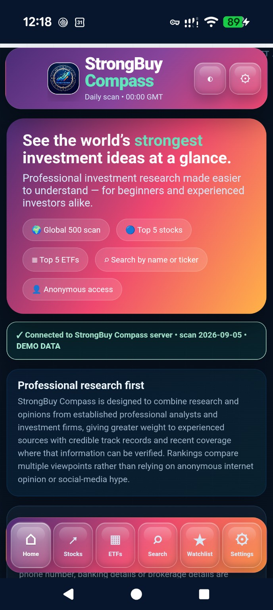
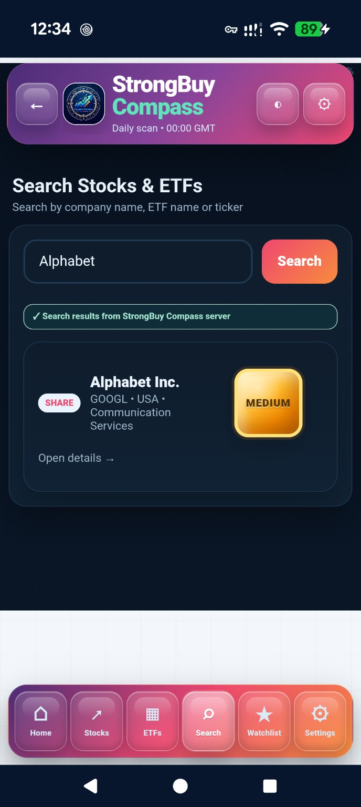

🌍
Global 500 scan
Review a broad universe of large, investable companies using market, fundamental, analyst and risk information from licensed professional sources.
StrongBuy Compass is being built to make professional stock and ETF research easier to understand — bringing analyst opinion, risk signals and longer-term illustrations together in one clear experience.
The current prototype uses demonstration investment data while commercial financial-data licensing is being evaluated. It is not a live recommendation service.

The aim is not to turn StrongBuy Compass into a high-frequency trading terminal. It is designed as a daily research companion that helps people identify which opportunities may deserve deeper investigation.
Review a broad universe of large, investable companies using market, fundamental, analyst and risk information from licensed professional sources.
Highlight the five shares with the strongest overall combination of professional analyst confidence, business quality, valuation, momentum and risk.
Rank ETFs separately using factors such as cost, diversification, liquidity, structure, concentration and longer-term outlook.

The application already connects to its own backend over HTTPS, with PostgreSQL storage and a scheduled Daily Midnight Scan framework.
StrongBuy Compass is being designed to combine research from established professional analysts and investment firms, giving greater weight to experienced sources with credible, verifiable track records and recent coverage.
Rankings are intended to compare multiple professional sources rather than relying on one analyst, anonymous internet opinion or social-media hype.
Where licensing permits, analyst history, accuracy and historical performance can contribute to how strongly an opinion is weighted.
Every idea is intended to sit alongside transparent risk signals, bull/bear reasoning and longer-term illustrations — never a guarantee of returns.
Pull licensed market, company, ETF and professional research data into the StrongBuy Compass backend.
Convert different provider formats into a consistent internal research model.
Calculate stock and ETF scores using the StrongBuy Compass methodology and risk framework.
Store the daily results and make the latest research available to the app through the private API.
We are currently evaluating professional financial-data, analyst-research and ETF-data providers for commercial integration into the product.